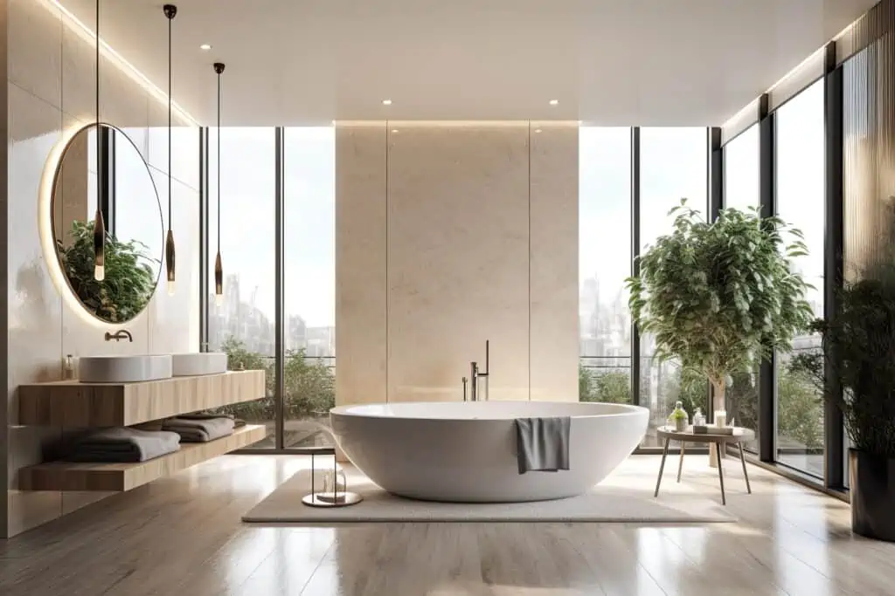
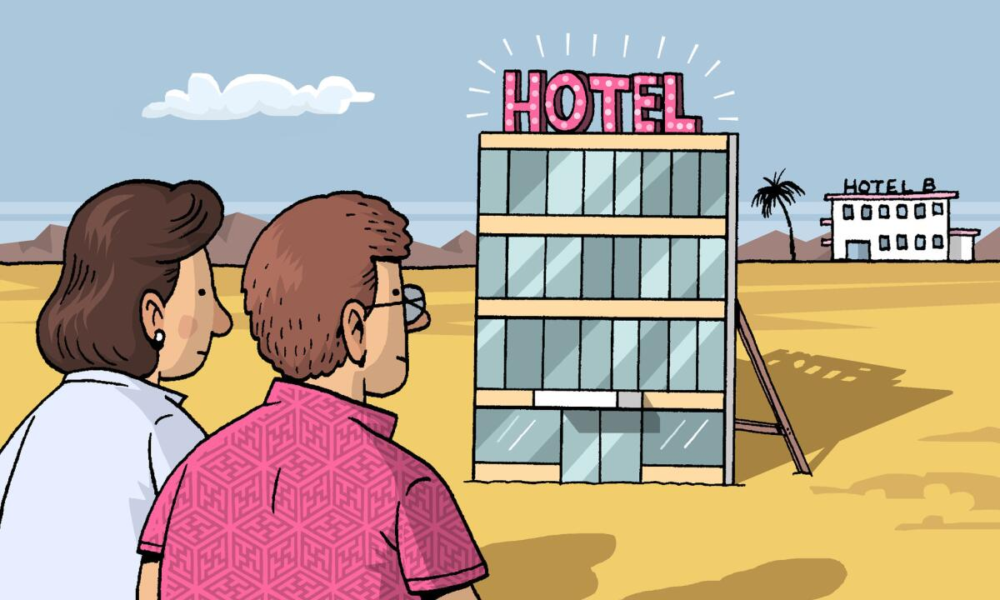
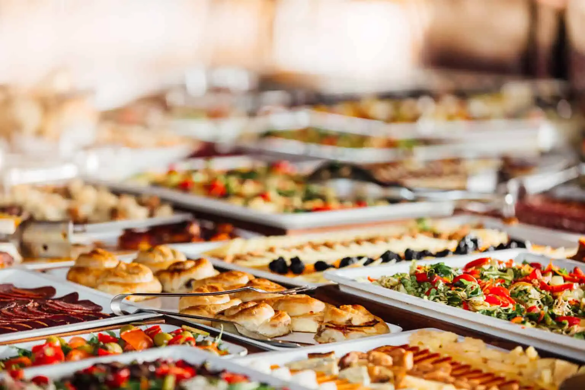

Otel Seçerken Dikkat Edilmesi Gerekenler Nelerdir?
Hepimiz tatil veya iş gezisi sırasında otellerde konaklama yapıyoruz. Peki bu oteli tercih ederken dikkat edilmesi gerekenler nelerdir? İşte bu yazımızda bu soruya detaylı bir açıklık getiriyoruz.
1) Temizlik ve Hijyene Dikkat Edin
Otel seçimi yaparken temizlik ve hijyen şüphesiz en önemli konu. Sağlığınız ve kaliteli, konforlu bir konaklama geçirmeniz için konaklayacağınız otelin temizlik ve hijyen kurallarına dikkat etmesi gerekiyor. Çarşaf ve yatakların temiz olması, Odaların günlük olarak temizlenmesi ve bunların rutin sıklıkla tekrar edilmesi otelde konaklamaya karar verirken düşünülen konuların başında geliyor.
Zaten herkes için çok önemli olan temizlik ve hijyen konusu son dönemde yaşadığımız corona virüs sebebiyle iyice önem kazandı. İç huzurumuz ile tatil yapabilmek için otelin her türlü önlemi alıp almadığına dikkat etmek gerekiyor.
2) Konforunuzdan Ödün Vermeyin
Konaklayacağınız otelin başta odaları olmak üzere konforlu olması otel tercihi yaparken dikkat edilmesi gereken bir diğer önemli konu. Dekorun ve mobilyaların kaliteli ve yeni olması, yatakların uyumaya elverişli bir şekilde ortopedik ve rahat olması kaliteli bir tatil geçirmeniz için oldukça önemli etkenlerden.

Özellikle yaz aylarında bir konaklama gerçekleştirecekseniz oda içerisinde klima olması çok hassas bir konu. Çünkü bu tatil kalitenizi tamamen etkileyebilir. Bunlara ek olarak lavabo ve tuvaletlerin yeni olması konforunuz için ekstra önem taşıyor.
3) Güvenilir Olmasına Özen Gösterin
Otel seçerken dikkat etmeniz gereken bir başka konu güvenilir olması. Güvenilir bir otel size kendinizi daha rahat hissettirecek. Bunun için otelin kurumsal ve zincir otel olması kendinizi daha iyi hissetmenize sebep olacak. Zincir otellerde bir konudan memnun kalmasanız dahi konuyla hemen ilgilenip çözüm üretmeye çalışacaklarından emin olabilirsiniz. Bu oteller marka güvenilirliği için geri dönüşlere oldukça önem veriyorlar.

4) Yemek Seçeneklerini Kontrol Edin
Restoranı bulunan oteller misafirler tarafından her zaman daha fazla tercih ediliyor. Elbette restoranın ücretlendirme politikası ve kalitesi de oldukça önemli bir konu. Rahat ve güzel bir ortam sağlayan, lezzetli yemekler sunan ve uygun fiyatları olan oteller, misafirler tarafından her zaman artı puana sahip oluyor.
Fakat bazı oteller içerisinde restoran bulunup bulunmaması çok önem teşkil etmiyor. Çünkü konumundan dolayı yemek yiyebileceğiniz birçok yere yakın yerde bulunuyor. Burda tercih tamamen size kalmış. Otelden çıkmadan mı yemek yemek istiyorsunuz yoksa etrafı gezerken aynı zamanda yeni lezzetler deneyimlemek mi?

5) Misafir Yorumlarını Mutlaka Okuyun
Artık her bilgiye 7/24 ulaşabiliyoruz. Otel hakkında tercih yaparken de mutlaka yorumları okumalısınız. Çünkü otelin daha önce konaklayan kişiler tarafından değerlendirilmesi daha objektif bir yorumlama olacak. Üstelik bu yorumlar zincir ve kaliteli otellerde dikkate alınacak ve kendilerini geliştirmeleri konusunda olanak sağlayacak.
Özetleyecek olursak, konaklama yapacağınız otelle ilgili otelin sosyal medya hesapları, internet sitesi ve çeşitli yorum yapılan sitelerde otel yorumlarını mutlaka okumalı ve ona göre tercih yapmalısınız.
6) Otel Fiyatlarına Dahil Olmayan Seçenekleri İnceleyin
Otel seçerken sadece özelliklere bakmak yeterli değil. Bu özelliklerin ek ücretli olup olmadığı da oldukça önemli. Bunun için konaklama yapacağınız yerin fiyata dahil olmayan seçeneklerini inceleyin. Örneğin internet fiyata dahil mi yoksa ek ücretli mi? Bu dikkat etmeniz gereken konuların başında geliyor.
Sizi şaşırtacak ek ücret istenebilecek diğer şeyler ise havlu değişimi, oda temizliği, bagaj tutma, spor salonu kullanımı, mini buzdolabı kullanımı, erken check-in olarak sıralanabilir. Tstli ise maliyetlerini hesaplayın ve otel çıkışı sırasında kötü bir sürprizle karşılaşmayın.